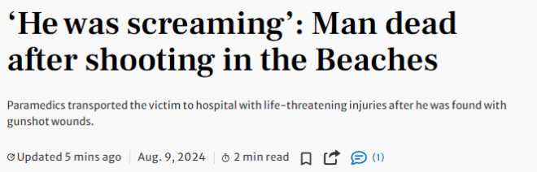
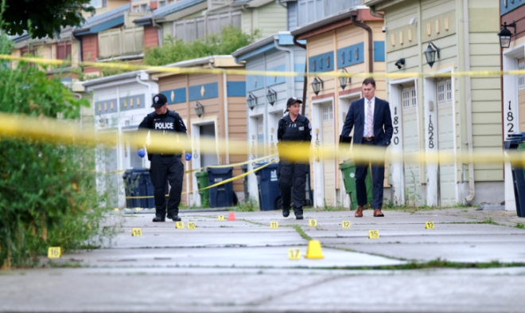
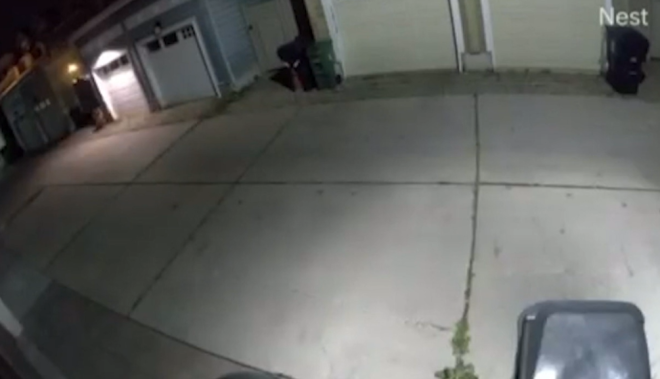

多伦多警方称，周四晚上，一名男子在Woodbine Beach附近遭枪击，送医后不治身亡。
警方周五证实，枪击事件发生在晚上10点40分左右，地点位于Joseph Duggan Avenue和Lake Shore Boulevard East附近的一条小道，距离Woodbine Beach仅几步之遥。


该地区的一位居民向CP24提供的监控录像捕捉到了疑似枪击的声音。视频中可以听到远处有人在喊叫，同时传来至少10声巨响。

当地居民们表示，该地区确实很热闹，尤其是在周末，人们会把车停在社区里，然后去沙滩玩。这里曾经发生过一些骚乱事件，比如人们进行烟花大战。
63岁居民的欧文（Paul Irvine）透露，枪击发生时他正在睡觉，但他家的监控摄像头拍下了当时发生的一切。他向警方提供了录像。
“大家一致认为，听到了5到7声枪响。我们这里经常有人放烟花，虽然很难分辨是枪声还是放烟花，但这一次人们都说他们能分辨出来。”
欧文说，枪声过后，他听到了尖叫声。
他说：”一个男人在尖叫。我不知道他到底在尖叫什么，因为我当时处于半迷糊状态，但我听到了一连串’天啊，天啊。尖叫，尖叫，尖叫，砰，砰，砰，砰。”
“监控拍到那家伙正在拼命奔跑，应该是在逃命。很难看清楚，但看起来他已经中枪了，他跑到这边的房子，然后倒下了。”
欧文说，警察几乎立即赶到现场，开始对受害者进行心肺复苏抢救。救护车大约15分钟后赶到。
另一位53岁居民的韦尔登（Graham Verdon）说他当时也听到了枪声。他住在距离事发地点约500英尺的地方。
他说：”声音太大了，听起来不像鞭炮声。”
第二天早上，警方出动了大量警力，在封锁区域周围设置了近20个证据标记。警方正在对现场进行调查和拍照。
警方媒体联络官员Ashley Visser表示：”目前现场情况非常复杂，信息非常有限。”
警方尚未公布任何可能的嫌疑人信息。凶杀组已接手调查。任何知情者请致电416-808-5500。